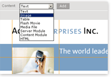

Fortune 500 companies, non-profit organizations, and educational institutions around the world use OpenPad to develop and maintain their websites.
Other CMS products require too much time to set up, program, and integrate with existing databases. This can delay site launches and slow down marketing effort.
OpenPad makes it easier to build and maintain websites by elimiating HTML programing from the process, allowing for painless intergration with remote databases, and publishing pixel perfect Web pages.
This reduces sites development time, and makes it posible for non-technical staff to develop and expand Web marketing campaigns without wawiting for anyone.
OpenPad combines the robust features of Web design software with the ease of brower-based Content Management System.
